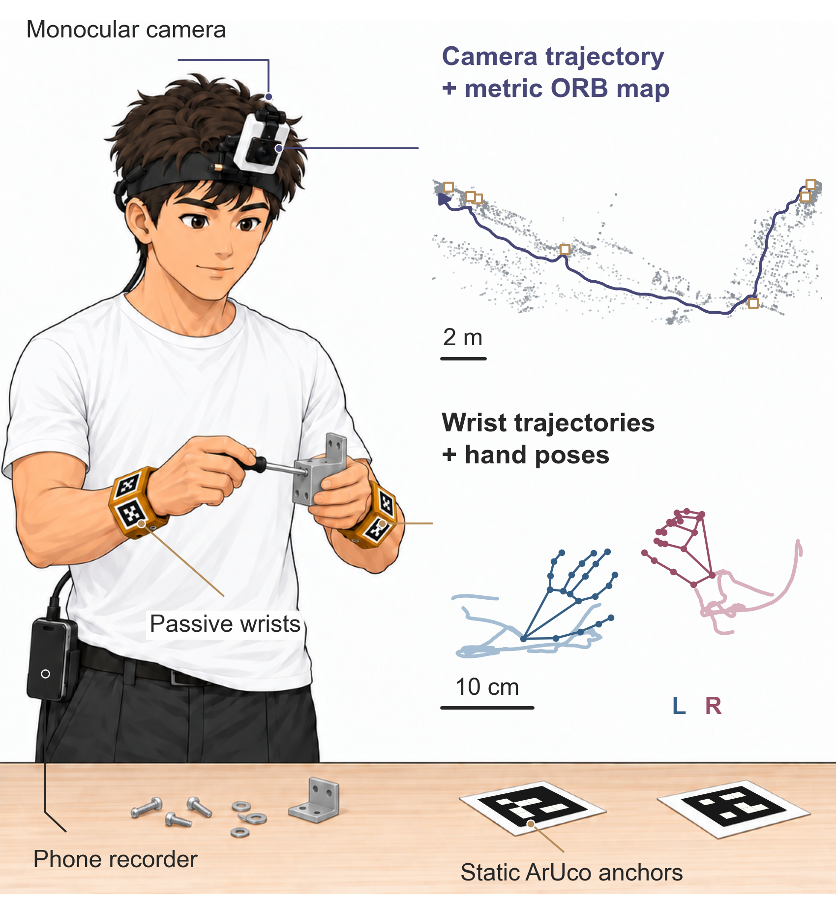
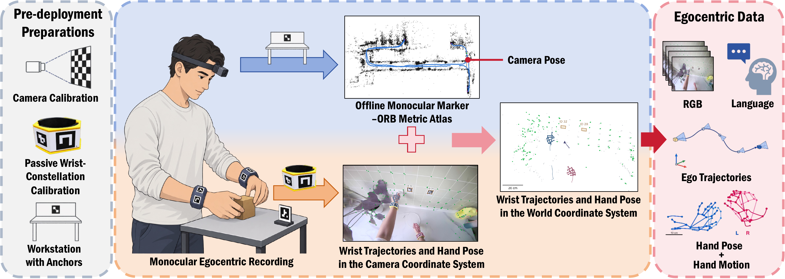

01 · 12 SEC
Retrospective recovery
Later map evidence recovers supported earlier image-to-map matches.
MONOCULAR · METRIC · OFFLINE
MonoEgo combines one head-mounted RGB camera, printable passive wrist fixtures and sparse workstation markers to reconstruct metric camera and wrist trajectories offline.
One image clock · No wrist battery, IMU or radio

Camera, marker and hand observations share one timeline.
Printable fixtures use no wrist-mounted electronics.
Workstation observations supply metric constraints.
Visual features connect motion between anchor views.
Measure camera intrinsics and the rigid marker layout of each assembled wrist fixture.
Keep the original first-person RGB frames intact. Static markers sit near task areas; wrists carry separate moving markers.
MonoTag combines ORB features and marker corners to build a metric Atlas, refine scale, and recover supported earlier poses.
Review camera and wrist trajectories together with validity, map identity and committed map events.

Short excerpts from offline reconstructions. The final Atlas and the recorded construction view are shown separately.
Later map evidence recovers supported earlier image-to-map matches.
A new anchor observation refines scale after geometric validation.
Common-anchor evidence joins maps; a later visual loop updates the Atlas.
Excerpts show accepted updates from existing recordings. They do not represent real-time processing speed.
Hardware and documentation are in MonoEgo. The reconstruction implementation, setup instructions and tests are in MonoTag SLAM.